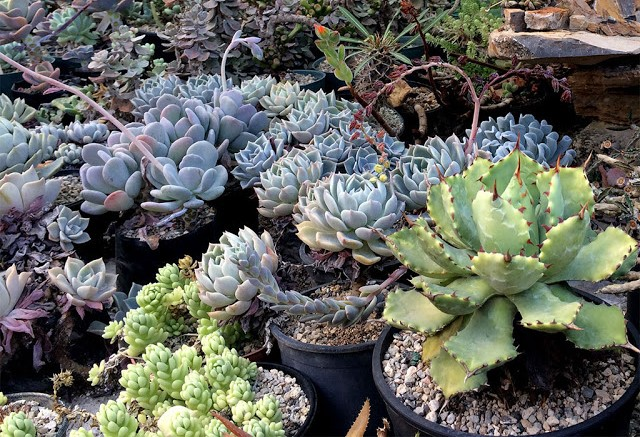
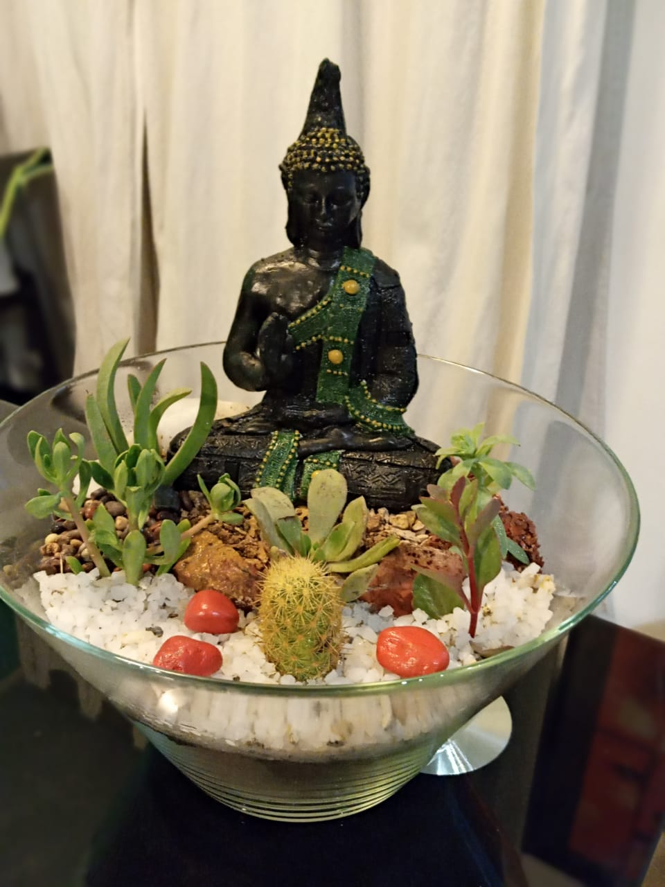
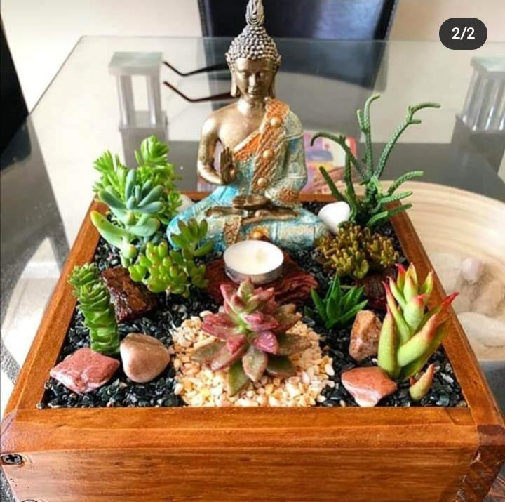
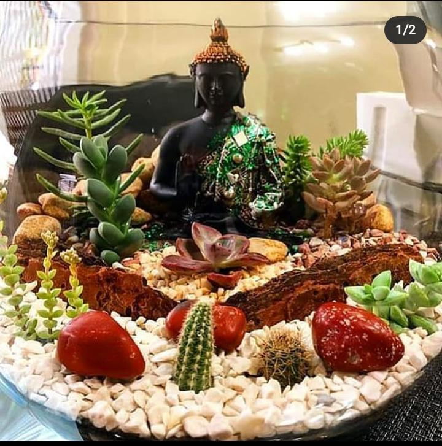
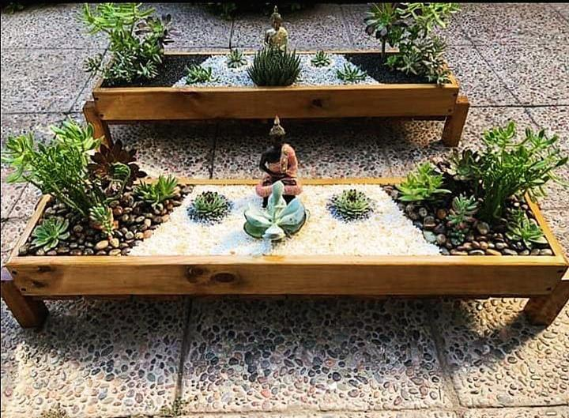
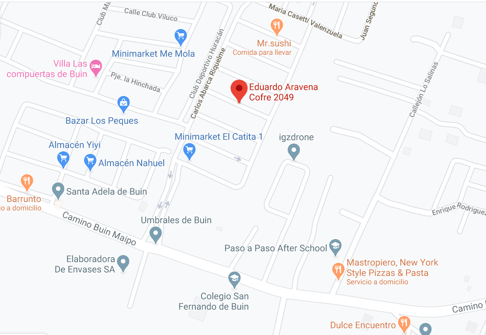

Venta de Terrarios – Cactus y Suculentas
 Las suculentas son un amplio grupo de plantas que se caracterizan por presentar las raíces, el tallo o las hojas engrosados para permitir el almacenamiento de agua. Esto les permite sobrevivir en entornos
secos que para otras plantas sería imposible. Las plantas suculentas pueden pertenecer a varias familias. Los grupos que más se destacan son las cactáceas y las crasuláceas. Otras familias que presentan un gran número de especies suculentas
son: Agavaceae, Euphorbiaceae, Portulacaceae Aizoaceae y Apocynaceae.
La frecuencia de riego depende de la época del año, del recipiente en que crecen, el sustrato y de la especie y su biología. Todas las suculentas tienen una época de crecimiento bastante precisa en el año y esta puede durar un mes o varios; en esta época
es cuando necesitan mayor cantidad de agua. Antes de efectuar el riego en nuestra suculenta es recomendable conocer e investigar un poco respecto a ella para evitar confundirnos (el riego de muchas suculentas por personas que no las
conocen es la principal causa de la muerte de estas plantas).




Venta Plantas de Interior
Se denomina planta de interior a cualquier especie vegetal cultivada en lugares bajo techo, como casas u oficinas. En su gran mayoría, son variedades de climas tropicales que se aclimatan
en entornos geográficos ajenos gracias a que el cultivo en interior les proporciona las condiciones adecuadas. No hay que confundirlas con algunas plantas de balcón o de jardín, que se ubican en interiores temporalmente pero que para
subsistir requieren periodos más largos al exterior. Este tipo de plantas se cultivan normalmente con propósitos decorativos o por razones de salud, como purificadores del aire. Pueden agruparse recreando ambientes selváticos, en invernaderos
y miradores acristalados.
Cultivo
Los principales factores que deberían considerarse en este tipo de plantas son la humedad del suelo, la luz, la humedad ambiental, la temperatura, los fertilizantes, el enmacetado y el control de plagas.
Humedad
del suelo Tanto el exceso como la escasez de riego pueden ir en detrimento de la planta. La mejor forma de determinar si una planta necesita riego es comprobar la humedad del suelo. Para ello, se toca la superficie
de la tierra y se introduce un dedo ligeramente en el sustrato. El suelo puede variar entre muy mojado (como si estuviera recién regado) a muy seco. Típicamente, una planta de interior necesita riego alrededor de una vez por semana,
aunque no se recomienda aplicar esta regla con rigidez. Para regar, rociar agua uniformemente sobre la superficie del sustrato hasta que empiece a drenar por el fondo de la maceta, lo que asegura una completa saturación.
Venta Cuarzo y Tierra de Hojas
Cuando queremos redecorar un espacio o renovar el ambiente en él, añadir unas piedras o minerales es algo necesario. Estas tienen cualidades energéticas, que pueden ayudar a mejorar nuestra
vida cotidiana y a transformar la energía positiva de lugares como tu hogar o la oficina. Pero siempre con un toque sofisticado, gracias a la forma, colores y belleza natural que poseen.
¿Cuáles son los tipos de áridos?
Cuando tenemos un espacio pequeño en nuestro jardín, que tiene pocas horas de luz y donde el césped no se da bien, debemos pensar en piedras decorativas como opción. Funcionan como una superficie homogénea de aspecto muy natural
(como la rivera de un río) sin endurecer la estética del jardín.
Estos son los tipos de áridos:
1.- Arenas de playa: La arena, como se compone de piedrecillas de grano fino, se usa bastante como base en jardines de tipo zen. Además, podemos hacer figuras tipo mandalas.
2.- Piedras de río: Las piedras de río son en su mayoría ovaladas, sin puntas y de líneas suaves debido a la acción del agua. Por eso son muy decorativas y amables a la vista. Quedan perfectas acompañando huellas o macizos arbustivos.
3.- Piedra cuarzo: El cuarzo es un mineral con propiedades energéticas, muy positivas para las plantas y los seres vivos en general. Existe cuarzo rosado y cuarzo blanco, lo recomendamos con macizos arbustivos, sobre todo con cactus
ya que aportan la salinidad de su hábitat natural. Recuerda que el cuarzo también ilumina el jardín porque tiene la propiedad de reflejar la luz.
4.- Piedra cuarzo arroz: Este tipo de piedra es básicamente cuarzo pero de un grano más pequeño, sirve como arenilla blanca, con las mismas propiedades del cuarzo.
Contacto

Para cotizar nuestro productos:
Teléfono - Whatsapp : +56965504944
Email: TuTerrarium.Mateo@gmail.com
Despachos a Domicilio
Atendemos en nuestra local ubicado en:
Eduardo Aravena Cofre 2049, Buin, Región Metropolitana